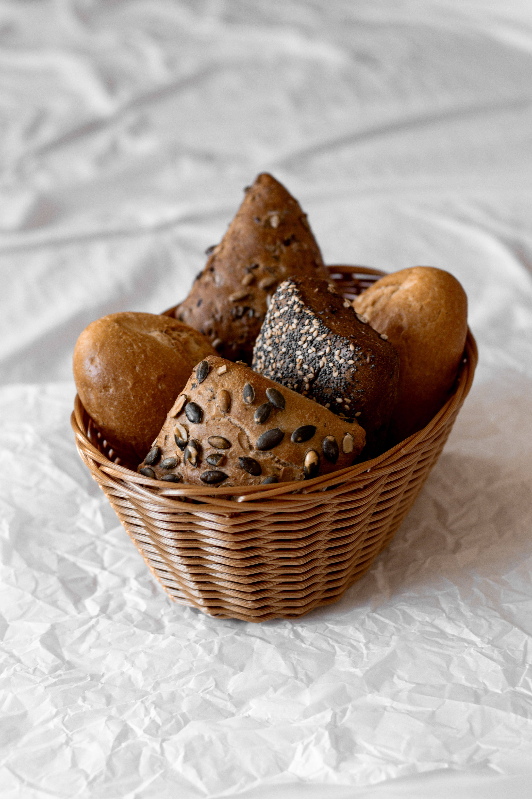
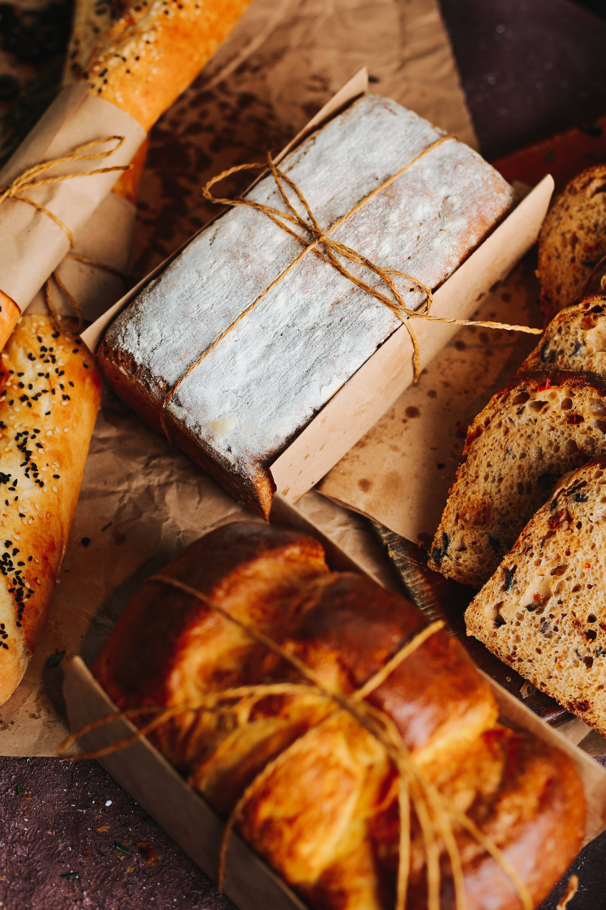
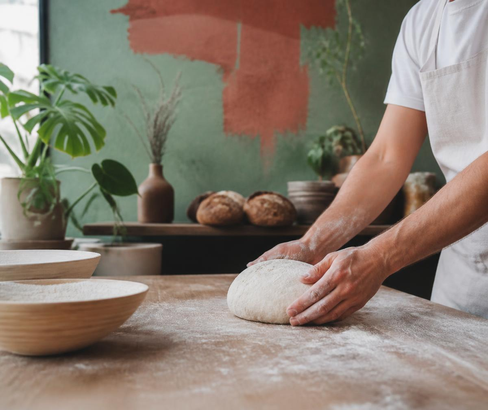

Hogaza de barrio
Masa madre · 48h
Panadería vegana · Málaga
Pan artesanal, bollería vegetal, café y mucho carácter.

Lo que sale del horno

Masa madre · 48h
Hojaldre · mantequilla vegetal
Tomate · romero · AOVE
Elaboramos nuestros productos diariamente. Consulta la disponibilidad en tienda.
Nuestra historia
Miga Urbana nace de una idea sencilla: hacer buen pan, hacerlo de forma artesanal y convertir la panadería en un lugar para el barrio.

Estamos en Málaga
Horario
Lunes — Sábado
08:00 — 15:00